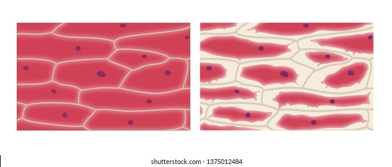
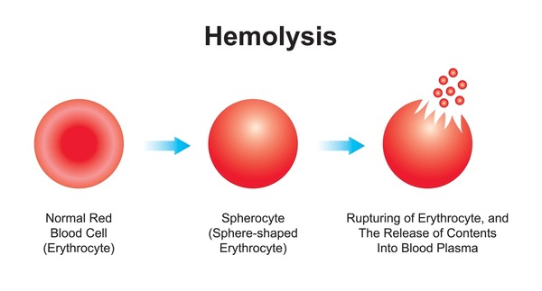

Diffusion
Diffusion is the movement of gaseous or liquid molecules from a region of higher concentration to a region of lower concentration through the medium of air or liquid until they (molecules) are evenly distributed.
Importance of Diffusion in Plant
(i) Diffusion acids movement of oxygen produced during photosynthesis into the atmosphere.
(ii) Diffusion assists easy movement of carbon (iv) oxide from the atmosphere into the leaves through the stomata cell.
(iii) Diffusion promotes free movement of oxygen needed for respiration from the atmosphere into the plant through stomata cell.
(iv) Movement of water vapour from the leaves of plant to outside in a process called transpiration is possible because of diffusion.
Importance of diffusion in Animal
(i) Absorption of glucose and other food material through the villi in the small intestine in through diffusion.
(ii) Diffusion aids the exchange of body nutrients in the placenta from the mother to a developing foetus.
(iii) Diffusion aids gaseous exchange in many cells and organisms for instance amoeba takes in oxygen and get rid of carbon (iv) oxide by diffusion.
(iv) Diffusion aids the movement of carbon (iv) oxide form the lungs capillaries into the air sac and vice- versa.
Osmosis
Osmosis is defined as the movement of water molecules from a region of low concentration fo solute to a region of high concentration of solute through a semi-permeable membrane separating the two solution until equilibrium is attained.
A solution with higher solute concentration has a smaller amount of water left for dissolution of more solute, while a solution with lower concentration of solute has more water available.
Condition necessary for osmosis to take place
(i) Presence of a stronger solution e.g. sugar or salt solution
(ii) Presence of weaker solution e.g. distilled water
(iii) Presence of a selective or differentially permeable membrane/pig bladder
Types of solution
(i) Hypertonic Solution is a solution which gains water in osmosis or that is higher in concentration
(ii) Hypotonic Solution is a solution that lose water in osmosis or a solution that is weak-distilled water
(iii) Isotonic solution : when a state of equilibrium is established between two solution, that is neither solutions gains or loses water.
Osmosis is a special form of diffusion
Differences between Diffusion and Osmosis
1. Diffusion occurs in gases and liquid while osmosis only occur in liquids.
2. Differentially permeable membrane is not required for diffusion while osmosis requires differentially permeable membrane.
3. It occurs in living and non-living organisms for diffusion whileIt occurs naturally in living organisms for osmosis.
4. Molecules diffuse into any space accessible to them in diffusion while for osmosis, water molecules move between two solutions of different osmotic pressure or concentration with movement of the molecules from the lesser concentration to the higher concentrated liquid or substance.
Plasmolysis
It is the process of water leaving plant cells, allowing the cytoplasm and plasma membrane to shrink away from the cell wall.
Plasmolysis is the natural phenomena that only occurs in extreme natural conditions, when there is a loss of water in the plant cell.
Plasmolysis is an example of the results of osmosis and rarely occurs in nature.
The word Plasmolysis was generally derived from a Latin and Greek word plasma – The mould and lusis meaning loosening.

Necessary condition for the Occurrence of plasmolysis
- Placing a plant cell in a stronger solution
- Excessive transpiration
- Concentration of sugar in the guard cell
- Damage to plant parts
Haemolysis
Haemolysis is the bursting of red blood cells in the plasma. Normally blood plasma and red blood cells are isotonic(see types of solution), having the same concentration of salt in each,
If for some reasons concentration of salt drops in plasma, water will enter the red blood cells by osmosis making it turgid and eventually burst.
Haemolysis leads to anaemia
Note: The opposite of Haemolysis is Crenation (a situation where red blood cell becomes flaccid).

Turgidity
Turgidity refers to the process of a cell(plant or animal)being swollen or turgid precisely due to the higher fluid content.
Turgid means swollen and hard. The pressure inside the cell rises, eventually the internal pressure of the cell is so high that no more water can enter the cell.
Flaccidity
A flaccid cell is one which is in an isotonic solution, this means that the solution and the cell have an equal water conc.. Although there are always water molecules flowing into and out of the cell, they balance each other out. So a cell is referred to as flaccid when it is between being turgid and plasmolysed.